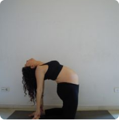

ХАТХА-ЙОГА
ХАТХА-ЙОГА
Древнейшее базовое искусство Хатха-йога заключается в создании баланса в вегетативной нервной системе путем выполнения укрепляющих асан, которые расслабляют и улучшают гибкость. Хатха подойдет начинающим и опытным практикам. Вы создадите основы дыхания и осознания тела, необходимые для всех других стилей. Это прекрасная возможность расслабиться, успокоить тело и разум, а также улучшить технику выполнения базовых поз.
ВИНЬЯСА
ВИНЬЯСА
Буквально слово обозначает «поток». Можно вложить в значение «поток» более общий смысл: динамический стиль йоги, где позы переходят одна в другую, с 3-5 вдохами в каждой.Этот вид хорош для тех, кому нужно движение для медитации, и отлично подходит для обучения использованию дыхания в качестве инструмента.Поскольку это динамичный стиль, он развивает сердечно-сосудистую систему, выносливость.
ИНЬ-ЙОГА

ИНЬ-ЙОГА
Практика включает позы и растяжки, которые удлиняют мышцы и фасции, тем самым помогая улучшить их подвижность и общую гибкость. Удерживать позы нужно от 2 до 10 минут каждую, давая достаточно времени для того, чтобы глубинные паттерны напряжения в теле начали сниматься. Медленный темп инь-йоги помогает успокоить нервную систему и дает ученикам возможность замедлиться, отдохнуть и насладиться этим медитативным стилем.
СИЛОВАЯ ЙОГА
ИНЬ-ЙОГА
Термин используется для описания динамической практики, включающей балансировку рук и перевернутые положения тела. Сила – это почти всегда стиль занятий мягкого Виньяса с силовыми подходами, чтобы увеличить частоту сердечных сокращений и укрепить торс. Силовая практика создана для того, чтобы вы вспотели и укрепили мышечный корсет. Попробуйте силовую йогу, когда чувствуете некий застой в теле, нуждаетесь в переменах или когда у вас много энергии.
БИКРАМ-ЙОГА
БИКРАМ-ЙОГА
«Горячее» направление Хатха-йоги практикуют во влажной, теплой среде. Тепло позволяет телу двигаться более свободно, а разогретые мышцы не рискуют быть растянутыми. Подходит для предотвращения травм, восстановления баланса и гибкости, улучшения понимания дыхания. Практика подходит для похудения, однако имеются противопоказания: любой срок беременности, проблемы с сердечно-сосудистой и эндокринной системами.
ПЕРИНАТАЛЬНАЯ ЙОГА
ПЕРИНАТАЛЬНАЯ ЙОГА
Практика включает позы и растяжки, которые удлиняют мышцы и фасции, тем самым помогая улучшить их подвижность и общую гибкость. Удерживать позы нужно от 2 до 10 минут каждую, давая достаточно времени для того, чтобы глубинные паттерны напряжения в теле начали сниматься. Медленный темп инь-йоги помогает успокоить нервную систему и дает ученикам возможность замедлиться, отдохнуть и насладиться этим медитативным стилем.
АЭРО- ЙОГА
АЭРО- ЙОГА
Воздушная йога подразумевает использование подвешенных гамаков (или строп), чтобы ученики могли принять нужные позы, которые в противном случае были бы невозможны. Новички в гамаке могут легко выполнять стойки на голове, руках и плечах. Это весьма увлекательный урок, своего рода воздушная гимнастика, который открывает дверь к преимуществам перевернутых поз для всех.Подходит для новичков, которые хотят работать с перевертываниями.
Наши йога-инструкторы

Алина Иванова
Стаж 5 лет
Дипломированный тренер по йоге и Fly йоге. Преподаватель женской йоги.
София Ермолаева
Стаж 7 лет
Дипломированный тренер по йоге и Fly йоге. Преподаватель женской йоги.
ЕвгенияКуликова
Стаж 6 лет
Дипломированный тренер по йоге и Fly йоге. Преподаватель женской йоги.